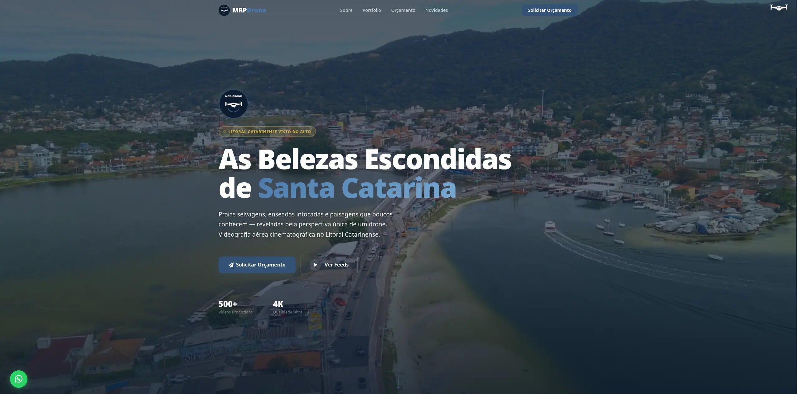

MRP Drone
Landing page for a professional drone photography and videography business. A freelance project designed to attract clients, showcase aerial work, and establish a credible online presence.
Overview
MRP Drone is a professional landing page developed as a freelance project for a drone photography and videography business operating in Brazil. The site acts as the client's primary digital storefront — a place where potential customers can discover the service offering, browse past aerial work, and reach out to book a session.
The goal was to create a visually compelling, fast-loading website that would stand out in a competitive creative services market while being straightforward to maintain. The result is a single-page application with smooth scroll animations, a curated portfolio gallery, and a direct contact channel.
Problem
The client operated a drone photography and videography service but had no dedicated web presence to support their business growth. Without a professional website, they faced several key challenges:
- Potential clients had no reliable way to view past work or understand the range of services offered.
- The business relied entirely on word-of-mouth and social media, limiting its reach and perceived professionalism.
- There was no centralised contact point — inquiries were scattered across different platforms.
- The lack of a web presence made it harder to charge premium rates for a premium service.
The brief was to solve all of these with a single, well-crafted website that was easy to maintain going forward.
Solution
The delivered solution is a modern, responsive single-page landing site structured around the customer journey — from first impression to booking inquiry.
- Hero section: Full-screen visual impact with a clear value proposition and call-to-action, immediately communicating the nature and quality of the service.
- About section: Introduces the photographer, building trust and a personal connection with potential clients.
- Portfolio gallery: A curated showcase of past aerial photography and videography projects, demonstrating the quality and range of work.
- Contact section: A streamlined form and direct social media links, making it easy for interested clients to get in touch.
- Social links: Integration with existing social channels to reinforce the brand and allow visitors to explore more content.
The fully responsive layout ensures a consistent, high-quality experience from mobile phones to large desktop monitors.
Technologies
React
Component-based UI development for a maintainable, scalable structure even within a single-page layout.
Vite
Build tooling with fast development server and optimised production bundles for quick load times.
CSS Modules
Scoped component styles to prevent naming conflicts and keep the stylesheet maintainable as the project grows.
GitHub Pages
Free, reliable static hosting with automatic HTTPS and easy deployment from the repository.
Challenges
Several interesting technical and design challenges came up during development:
- Image performance: Aerial photography images are large and high-resolution by nature. Balancing visual quality — essential for a photography portfolio — with fast page load times required careful compression and lazy loading strategies.
- Animation smoothness on mobile: The scroll-triggered animations needed to remain smooth at 60fps on lower-powered mobile devices, which required keeping animation complexity in check and relying on CSS transitions over JavaScript-driven animation where possible.
- Creative vs. performance trade-off: A photography portfolio naturally calls for bold visuals and large imagery. Every design decision had to weigh visual impact against loading performance, especially for users on mobile data connections.
- Responsive portfolio layout: The gallery needed to present both landscape drone photography and vertical/square formats gracefully across all screen sizes without awkward cropping or layout breaks.